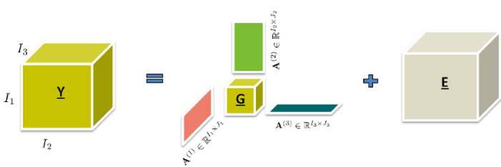

Tensors are a fundamental concept in mathematics and have become increasingly important in the field of data analysis. In this blog post, we will explore what tensors are, their properties, and how they are used in various data analysis applications.
In simple terms, a tensor is a multi-dimensional array. While a scalar is a single number and a vector is a one-dimensional array, tensors can have multiple dimensions, making them a generalization of scalars, vectors, and matrices.
Scalar: a = 5
Vector: v = [1, 2, 3]
Matrix: M = [[1, 2], [3, 4]]
Tensor: T = [[[1, 2], [3, 4]], [[5, 6], [7, 8]]]
Tensors can be represented mathematically with indices to denote their components. For example, a tensor \( \mathbf{T} \) of rank 3 can be represented as:
\[ \mathbf{T} = T_{ijk} \]
Where \( i, j, k \) are the indices running over the dimensions of the tensor.
Similar to matrices, tensors support various operations such as addition, multiplication, and contraction. Tensor contraction generalizes matrix multiplication to higher dimensions.
\[ \text{Tensor Contraction:} \quad C_{ij} = \sum_k A_{ik} B_{kj} \]
Tensors are widely used in data analysis, particularly in fields like machine learning, computer vision, and natural language processing. Here are some key applications:
Tensor decomposition is a powerful tool for analyzing multi-dimensional data. One common technique is CANDECOMP/PARAFAC (CP) decomposition, which expresses a tensor as a sum of component rank-one tensors.
\[ \mathbf{T} \approx \sum_{r=1}^{R} \mathbf{a}_r \circ \mathbf{b}_r \circ \mathbf{c}_r \]
Here, \( \mathbf{a}_r, \mathbf{b}_r, \mathbf{c}_r \) are vectors, and \( \circ \) denotes the outer product.
Collaborative filtering is a technique used by recommender systems to predict user preferences for items. This method relies on user-item interaction data, which can be represented as a sparse matrix. When extending collaborative filtering to handle more complex data, tensors can be used.
In traditional collaborative filtering, you might have a user-item matrix where each entry represents the rating a user gives to an item. However, real-world data often involves more dimensions, such as time, context, or additional metadata about users and items. This is where tensors come into play. By representing the data as a higher-order tensor, we can incorporate these additional dimensions to capture more nuanced relationships.
Consider a recommender system that not only uses user and item information but also includes time and context (like location or device type). The data can be represented as a 4D tensor \( \mathbf{T} \), where:
\( T_{ijkl} \) might represent the interaction between user \( i \), item \( j \), at time \( k \), and in context \( l \).
Tensor factorization techniques, such as Higher-Order Singular Value Decomposition (HOSVD) or Tucker decomposition, can be used to decompose this interaction tensor into lower-dimensional factors. These factors help in predicting missing values in the tensor, i.e., predicting user preferences under different conditions.
Benefits:
In Natural Language Processing (NLP), tensors are used to convert words and sentences into numerical representations that can be fed into machine learning models.
Text data is often represented as high-dimensional tensors. For instance, in a typical word embedding approach, words are represented as vectors in a continuous vector space. These vectors are then used to form sentences or documents, which can be treated as tensors with multiple dimensions representing words, sentences, and documents.
Consider a document classification task where we want to classify documents into different categories. The text data can be represented as a 3D tensor \( \mathbf{T} \), where:
The first dimension represents the document index.
The second dimension represents the sentence index within a document.
The third dimension represents the word embeddings of each word in a sentence.
Tensor factorization techniques can be used to reduce the dimensionality of text data, uncover latent semantic structures, and improve the performance of NLP models. For example, techniques like Tensor-Train Decomposition (TTD) can be used to compress large NLP models, making them more efficient.
Benefits:
Tensors are a versatile and powerful tool in data analysis. They extend the capabilities of matrices to higher dimensions, enabling complex data representation and manipulation. Understanding tensors and their operations is crucial for advancing in modern data science and machine learning fields.
Here are some recommended papers and resources: